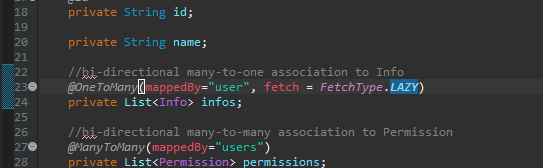
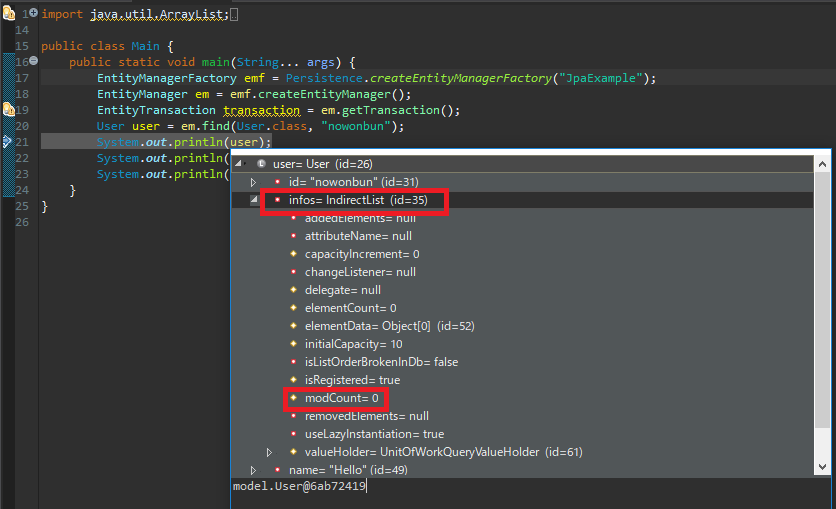
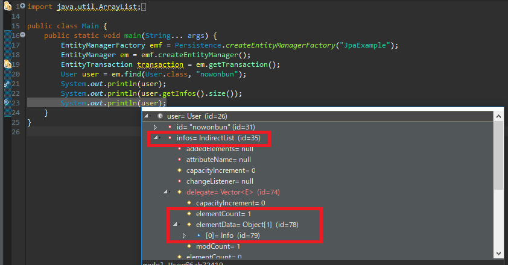
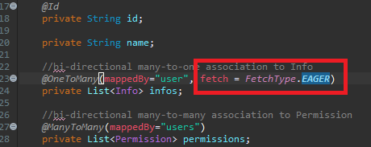
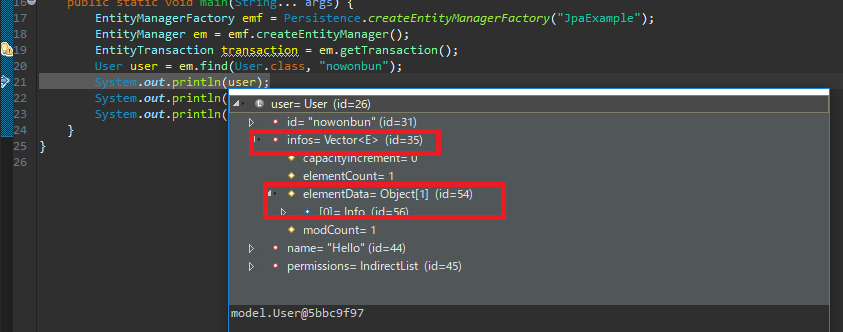
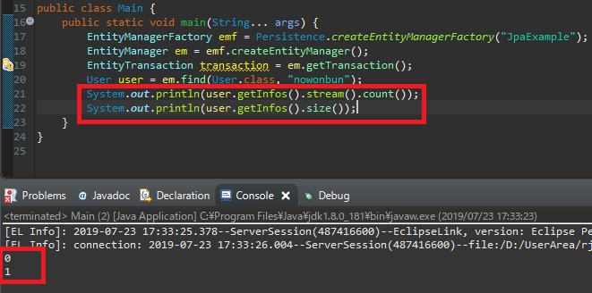
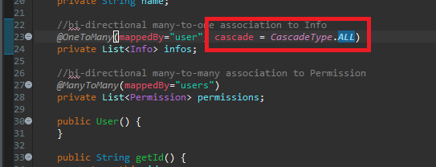
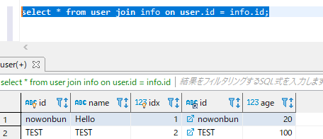

[Java スタディ - 43] JPAのEntityクラス設定(Cascade, fetch)
こんにちは。明月です。
このページは「JPA」の「entity」クラス設定(cascade,fetch)について調べてみました。
前述で「JPA」の基本設定と「Identity(auto_increment)」設定に関して説明しました。
link - [Java スタディ - 41] EclipseでJPAフレームワーク設定する方法
link - [Java スタディ - 42] JPAでpersistance.xml設定とentityクラス設定(@GeneratedValue設定)
fetch設定
- fetch設定はデータを持ち来る時、レファレンスのデータをいつ持ち来るかに関して設定する項目です。設定タイプは「EAGER」と「LAZY」があります。
「EAGER」の場合は「データ」を持ち来る時に「join」してデータを持ち来るオプションです。
「LAZY」の場合はデータの要請がある時データを持ち来るオプションですね。
insert into user (id,name) values('nowonbun','Hello');
insert into info(id,age) values('nowonbun',20);

上の例みたいに「User」クラスの「info」データに「Fetch.LAZY」設定をしました。そして「Eclipse」で下記とおりにソースを作成してデバックで確認しましょう。

デバックでデータを確認すると「user」の変数にデータがありません。その後、「size()」関数を実行し、もう一回に「user」の変数を確認するとデータがありますね。

すなわち、このデータは「size()」関数でデータを呼出す時、データベースに接続して「user」テーブルのキーで検索して持ち込んたデータになります。
今回は「Fetch.EAGER」に設定を変更しましょう。

もう一回にデバックしてデータを確認しましょう。

今回は「LAZY」設定と違い、「size()」関数でデータを呼び出さなくてもデータがもう設定されますね。
つまり、「Fetch.LAZY」と「Fetch.EAGER」の差はデータを参照する時に持ち込むか初めから「Join」で持ち込むかのことですね。
この差異はデータの扱う戦略に関して違います。「User」データが少ないし持ち込んで使わなければならない時は「EAGER」が効率的ですが、「User」データと「Info」データが大量だし、参照する時が参照条件によって違えば「LAZY」を通ってリーソスを少なくなった方が良いと思います。
※参考でこのfetch設定にはバグが一つあります。
「fetch.LAZY」設定する時に「for」や「size」などの関数で呼出すとデータを持ち込みますが、「stream」式で変換すると「null」になります。

stream式で使わなければならないと「fetch.EAGER」を使うか「stream」式の前の「size」などの関数でデータ持ち込んで後に使わなければならないです。
Cascade
- Casacadeは永続性転移ということでデータの整合性を設定するオプションです。
すなわち、「user」クラスを生成して「info list」でデータを「new」して入れ込んだら実際にデータをインサートする時に「user」クラスを「insert」してキーを持ち来て「info」テーブルにもレファレンスをかけて「insert」しなければならないです。
また、逆に「user」テーブルのデータが削除されると関連派生レファレンスを全て削除されなければならないです。
この「Cascade」のオプションは下記とおりになります。
| タイプ | |
|---|---|
| CascadeType.PERSIST | Entityが追加される時、関連なEntityも追加する。 |
| CascadeType.MERGE | Entityが修正される時、関連なEntityも修正する。 |
| CascadeType.REFRESH | |
| CascadeType.REMOVE | Entityが削除される時、関連なEntityも削除する。 |
| CascadeType.DETACH | 親のEntityがdetach()を実行されると、関連なEntityもdetach()状況になり変更事項が反映されない。 |
| CascadeType.ALL | 全てのCascadeが反映 |
そうすると「User」クラスの「Info List」に「CascadeType.All」を設定して「User」クラスが追加、削除される時に反映がちゃんとされるかを確認しましょう。

public class Main {
public static void main(String... args) {
//FactoryManageを生成する。「JpaExample」はpersistence.xmlに書いている宣言名
EntityManagerFactory emf = Persistence.createEntityManagerFactory("JpaExample");
// Managerを生成する。
EntityManager em = emf.createEntityManager();
// Transactionを持ち来る。
EntityTransaction transaction = em.getTransaction();
transaction.begin();
//Userクラスを生成
User user = new User();
user.setId("TEST");
user.setName("TEST");
// Infoリストを生成してデータを入力する。
user.setInfos(new LinkedList<>());
user.addInfo(new Info());
user.getInfos().get(0).setAge(100);
em.persist(user);
// トランザクション格納
transaction.commit();
}
}

「Info」にもデータがよく入力されました。
データベースを設計する時に「Master」テーブルと「Transaction」テーブルを定義して設計するはずですね。「Transaction」テーブルはデータが積もるところなので「Cascade」を連結して使いますが、「Master」テーブルの場合はプログラム上でデータが変わるとだめなので「Cascade」を設定すれば「NG」ですね。
その点をよく考えてテーブル設計、クラス設計をしなければならないですね。
- [Javaスタディ- 52] Java servletでインスタンスを初期する方法2019/10/17 07:15:48
- [Javaスタディ- 51] Spring web frameworkで発生する文字化けのEncoding設定2019/10/16 07:32:55
- [Javaスタディ- 50] Web Spring frameworkでfilter設定2019/10/15 20:12:35
- [Javaスタディ- 49] Web serviceのweb.xmlでエラーページ設定2019/10/14 20:13:44
- [Javaスタディ- 48] JPAのDAOをFactoryパターンで管理する方法2019/10/13 22:55:52
- [Java スタディ - 47] JPAのSpring frameworkで依存性注入する方法2019/10/13 00:40:08
- [Java スタディ - 46] JPAでDAOを生成する方法2019/10/11 07:30:14
- [Java スタディ - 45] JPAでトランザクションの使用方法とオブサーバーパターンで共通トランザクション関数を作り方2019/10/10 07:29:43
- [Java スタディ - 44] JPAのQuery を作り方2019/10/09 07:34:08
- [Java スタディ - 43] JPAのEntityクラス設定(Cascade, fetch)2019/10/08 07:43:33
- [Java スタディ - 42] JPAでpersistance.xml設定とentityクラス設定(@GeneratedValue設定)2019/10/07 07:38:13
- [Java スタディ - 41] EclipseでJPAフレームワーク設定する方法2019/10/04 19:24:43
- [Java スタディ - 40] Web spring frameworkのJSPで使う言語 JSTL - XML2019/10/03 20:02:06
- [Java スタディ - 39] Web spring frameworkのJSPで使う言語 JSTL - 関数、データベース2019/10/02 21:00:22
- [Java スタディ - 38] Web spring frameworkのJSPで使う言語 JSTL - コアー、フォーマッティング2019/10/01 21:48:08
- [Window] Apacheをインストール方法、サービスに登録する方法。2019/10/18 07:36:51
- [Javaスタディ- 52] Java servletでインスタンスを初期する方法2019/10/17 07:15:48
- [Javaスタディ- 51] Spring web frameworkで発生する文字化けのEncoding設定2019/10/16 07:32:55
- [Javaスタディ- 50] Web Spring frameworkでfilter設定2019/10/15 20:12:35
- [Javaスタディ- 49] Web serviceのweb.xmlでエラーページ設定2019/10/14 20:13:44
- [Javaスタディ- 48] JPAのDAOをFactoryパターンで管理する方法2019/10/13 22:55:52
- [Java スタディ - 47] JPAのSpring frameworkで依存性注入する方法2019/10/13 00:40:08
- [Java スタディ - 46] JPAでDAOを生成する方法2019/10/11 07:30:14
- [Java スタディ - 45] JPAでトランザクションの使用方法とオブサーバーパターンで共通トランザクション関数を作り方2019/10/10 07:29:43
- [Java スタディ - 44] JPAのQuery を作り方2019/10/09 07:34:08
- [Java スタディ - 43] JPAのEntityクラス設定(Cascade, fetch)2019/10/08 07:43:33
- [Java スタディ - 42] JPAでpersistance.xml設定とentityクラス設定(@GeneratedValue設定)2019/10/07 07:38:13
- [Java スタディ - 41] EclipseでJPAフレームワーク設定する方法2019/10/04 19:24:43
- [Java スタディ - 40] Web spring frameworkのJSPで使う言語 JSTL - XML2019/10/03 20:02:06
- [Java スタディ - 39] Web spring frameworkのJSPで使う言語 JSTL - 関数、データベース2019/10/02 21:00:22